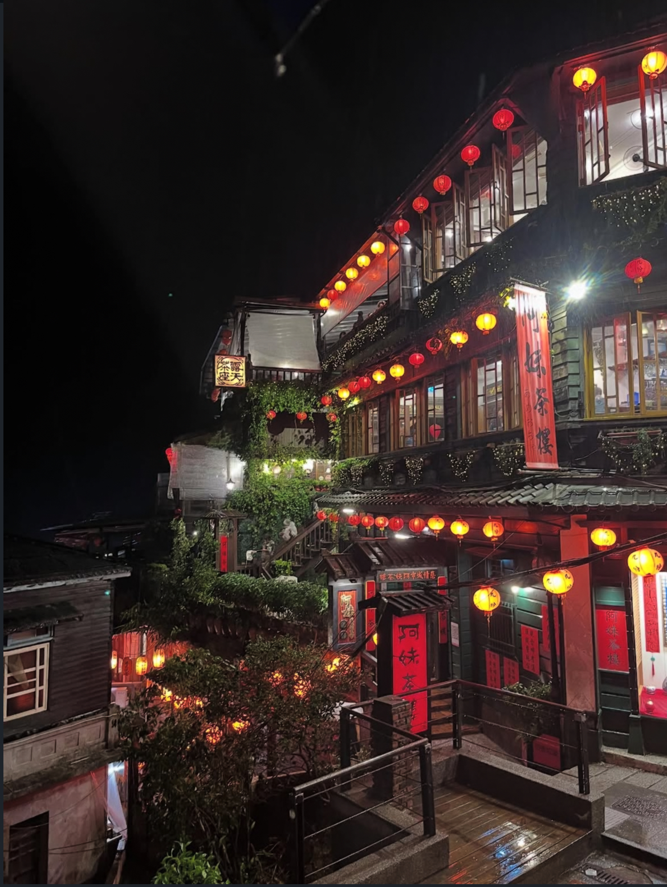
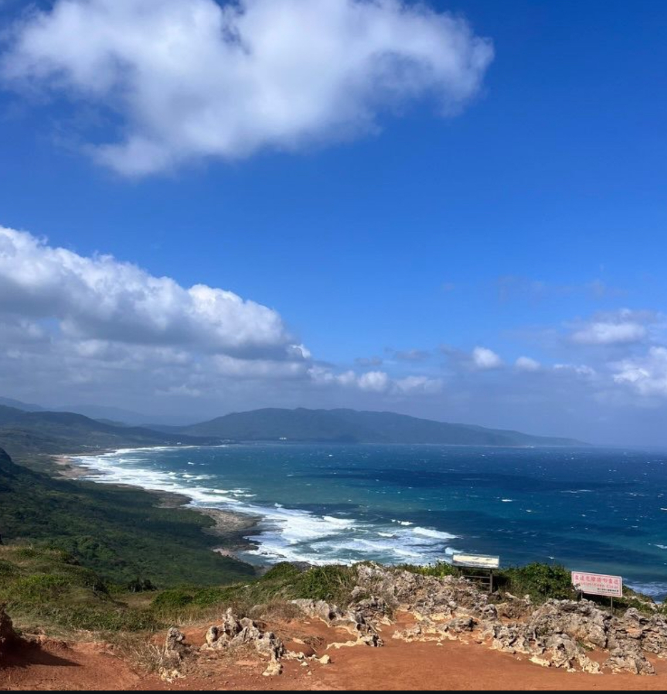
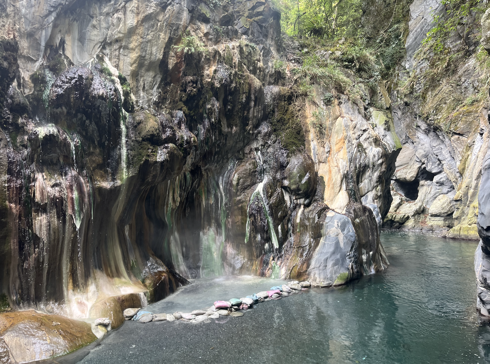
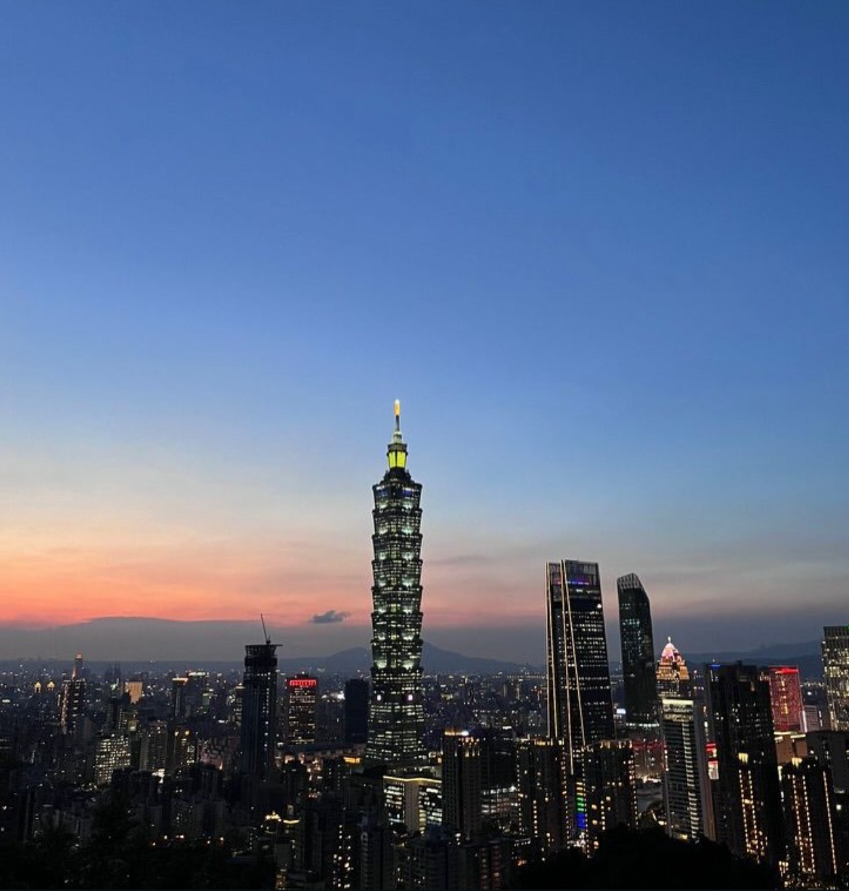
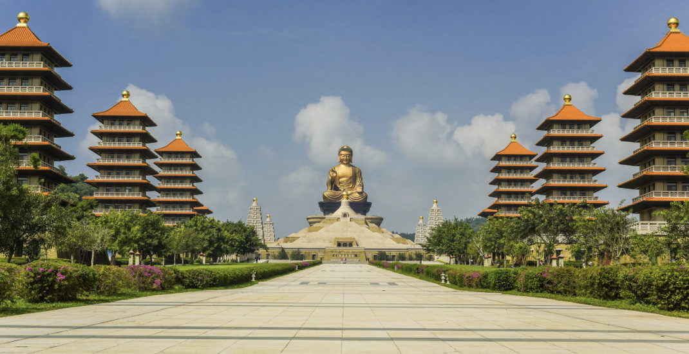
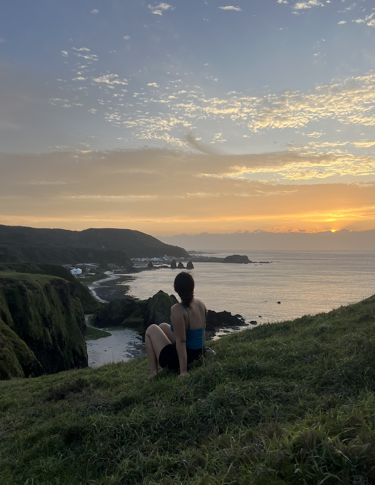
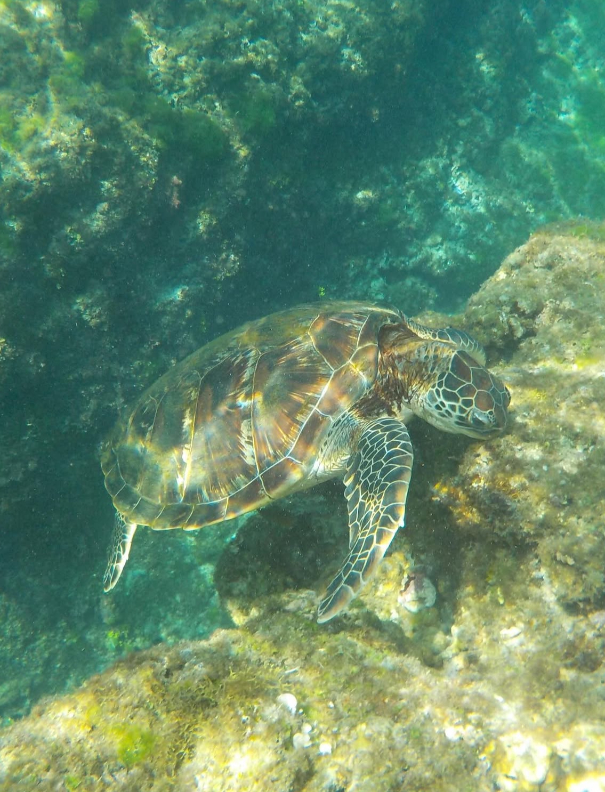

01 / TAIWAN
Jiufen
Traditionelle Gassen, Teehäuser und Berglandschaften.
TAIWAN ENTDECKEN
Während meines Auslandsjahres hatte ich die Gelegenheit, viele wunderschöne Orte in Taiwan zu entdecken. Von lebendigen Städten bis zu tropischen Inseln – hier teile ich einige meiner schönsten Reiseerlebnisse.

Traditionelle Gassen, Teehäuser und Berglandschaften.

Tempel, Natur und Radtouren rund um den See.

Traumhafte Strände und tropische Landschaften.

Abenteuer und natürliche heiße Quellen mitten in der Natur.

Beeindruckende Skyline und modernes Großstadtleben.

Traditionelle Tempel und taiwanische Kultur.

Türkisblaues Meer und wunderschöne Küstenlandschaften.

Eine kleine tropische Insel mit kristallklarem Wasser und Meeresschildkröten.